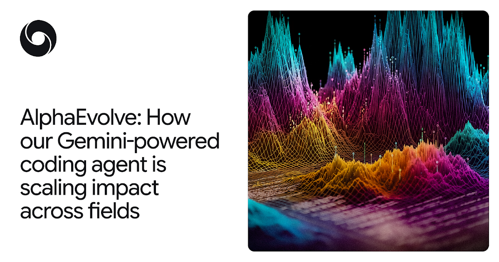
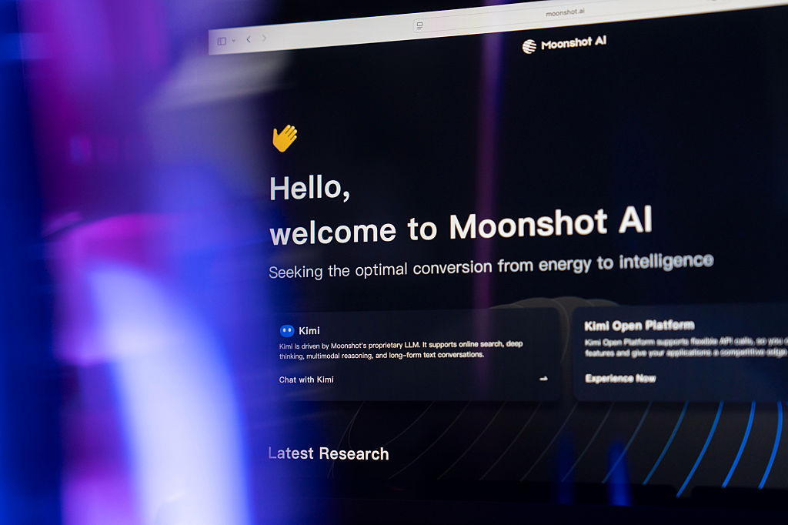
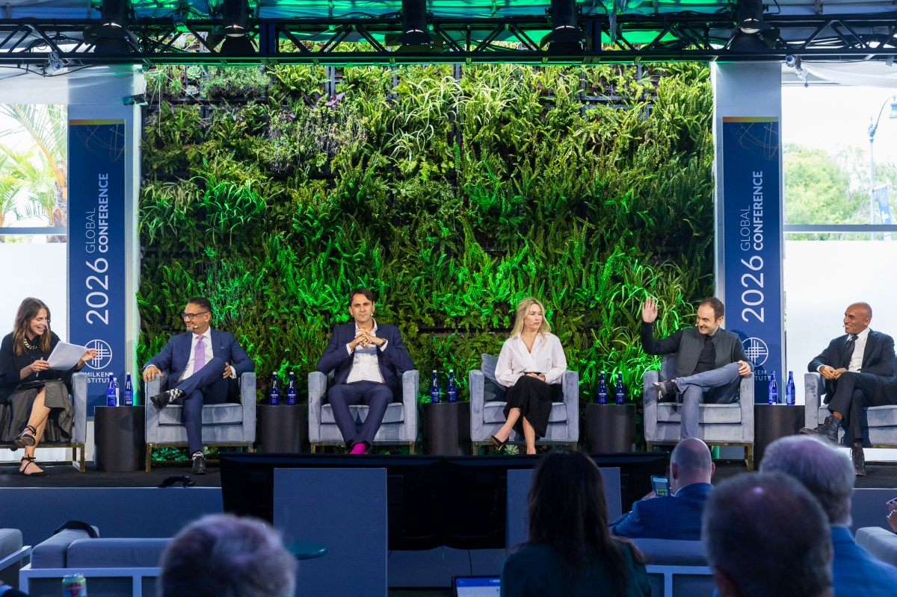

N°54 Anthropic Mythos 在 Firefox 找出大量高嚴重度漏洞 · AI 資安 agent 從 PoC 走進主流瀏覽器

Pin · Mozilla 公開承認 · Mythos 抓到的 bug 用人手 fuzzing 多半找不出來。
發生什麼
TechCrunch 5 月 7 日刊出 Mozilla 安全研究員與 Anthropic policy 團隊聯合披露 — Anthropic 開發的 AI 資安 agent Mythos 在過去 6 個月內 對 Firefox codebase 進行系統性 audit 找出一批高嚴重度（high-severity）邏輯漏洞 包括兩個被 Mozilla 評為 critical 等級的瀏覽器 sandbox 逃逸路徑。Mozilla 表示 這批漏洞中相當比例是「人手 fuzzing 與既有 static analysis 工具找不到的類型」 例如跨組件信任邊界錯誤、序列化反序列化路徑的時間競爭、以及在某些 GPU driver 互動下才會觸發的 memory corruption。
報導透露的細節包括三個層面。第一 Mythos 不是「丟 prompt 給 LLM 然後看結果」 而是 Anthropic 把 Claude 包進一個多步 agent loop 能讀整套 source tree、自動執行 fuzz、追蹤 stack trace 與動態 patch 對比。第二 整個 audit 流程 Mozilla 全程介入 漏洞披露與修補符合既有 CVE 流程 不存在 AI 自主對外公開的 governance 風險。第三 Mozilla 之所以選擇 Anthropic 而不是 OpenAI 或 Google 內部理由是 Anthropic 的 Responsible Scaling Policy 與 cyber capability 紅線在 Mozilla 的法律與安全評估流程中被認為「最容易談判 limit」。
為什麼重要
第一 AI agent 從「PoC 報告」變成「production 安全工具」的時間表被加速 6 至 12 個月。過去一年 OpenAI、Google、Anthropic 都展示過 AI 在 CTF 等模擬場景的能力 但都停在 demo 階段。今天 Firefox 是全球前三大瀏覽器 用戶數量級超過 2 億 真實 production code 被 AI agent 找到 critical 等級漏洞 是 cyber 領域決定性訊號。
第二 Anthropic 在企業 cyber 垂直的話語權結構性領先。5/4 N°39 Anthropic 因 cyber 紅線被踢出 Pentagon frontier 名單 被解讀為「立場太保守拿不到大單」。今天 Firefox 的 case 反向證明 — 正因為 Anthropic 在 cyber 邊界畫得清楚 才能讓 Mozilla 這種 governance 嚴格的開源組織願意把 codebase 整套交給它 audit。Anthropic 的「保守」在企業合規市場是溢價而不是折讓。
第三 對 OpenAI、Google、Microsoft 的 cyber agent 路線是直接競爭壓力。OpenAI 4 月發表的 GPT-5 cyber benchmark、Google 4 月的 Big Sleep 升級、Microsoft Security Copilot 都還在「我們有能力但客戶沒大規模採用」階段。Anthropic 用一個具名客戶（Mozilla）+ 具名漏洞（critical sandbox 逃逸）+ 具名流程（CVE）三件套搶下市場 first-mover 敘事。預期 Q3 內 OpenAI 與 Google 必出對標案例。
我們的判斷
三個看點：
(1) Anthropic 在 6 至 8 週內必推 Mythos 的商業化 SKU。現在 Mythos 仍是 Anthropic 內部使用 + 高敏 enterprise 對接形態。Firefox case 是行銷點同時是定價錨點 — 一筆 Firefox 等級 audit 合約價值 2 至 5 百萬美元 這個區間替 Anthropic 給未來的 Mythos Cloud 產品定錨。對企業客戶：CISO 應該開始評估「我們的 web app 是否願意付每年 100 萬美元給 AI agent 跑持續 audit」這個預算題。
(2) 開源項目集體迎來「AI audit 紅利期」。Mozilla 與 Anthropic 的合作模式可複製：開源項目（Linux Kernel、Rust ecosystem、Python、Node.js、Postgres）都缺長期穩定的安全 audit 預算 但有大量公開 codebase。預期 Anthropic 會在 Q3 內公開「AI for Open Source Security」公益計畫 同時 OpenAI 與 Google 必跟進對標。對讀者：6 個月內主流 open source 項目的 CVE 數量會明顯上升 但這代表「終於被找到」而不是「品質下降」。
(3) 反方觀點：AI 找漏洞會反向被攻擊者利用 整體 cyber 攻防天平不一定向防守傾斜。同一套 agent 技術 攻擊者也能跑 而且攻擊者無 governance 限制。Mozilla–Anthropic 走 responsible disclosure 流程 但開源攻擊者可以拿到同樣模型權重（如 Llama、DeepSeek、Qwen）部署在地端跑同樣的 audit 邏輯。對讀者：cyber 領域的 AI 軍備競賽進入「先發者短期占優 但 6 至 12 個月內攻防會重新平衡」階段 不要把 AI defender 視為長期不變的單向利好。
N°55 DeepMind AlphaEvolve 跨領域成果公布 · 數學、晶片、資料中心都跑出可驗證最佳化

Pin · 不只是 demo · Gemini 驅動的 coding agent 開始產出 measurable scientific output。
發生什麼
Google DeepMind 5 月 7 日在官方部落格公布 AlphaEvolve 自 2025 年初開放預覽以來 在多個領域累積的可驗證成果。AlphaEvolve 是一套 Gemini 驅動的 coding agent 核心邏輯是「進化式程式生成」 — 對同一個最佳化問題 agent 反覆生成、評估、淘汰候選 code 在 evaluator 給出明確 fitness function 的場景中能持續逼近最佳解。
DeepMind 列出的具體進展涵蓋三個面向。第一 數學：AlphaEvolve 在過去 12 個月找到 4 個從未被人類發表過的數學常數最佳化解 包括兩個與 packing problem 相關的長期猜想；其中一條被 IMO 級數學家評為「人類短期內難以獨立發現」。第二 晶片設計：AlphaEvolve 對 TPU v6 與 v7 的 floor planning 提出可實作改善方案 為下一代 TPU 在 die area 與功耗各取 4 至 7% 的優化（Google 內部已採用）。第三 資料中心：AlphaEvolve 持續優化 Google 全球資料中心的 workload scheduling 已替整體電力使用率（PUE）取得 0.5% 量級的長期改善 對 hyperscaler 級電費是每年數千萬美元的可量化節省。
HN 討論串在 12 小時內衝到 218 分 84 留言 開發者社群關注度極高。重點討論集中在三個質疑：可重現性（DeepMind 未開源完整 evaluator）、benchmark 條件（部分案例的人類 baseline 可能未足夠 strong）、以及與 OpenAI Codex 與 Anthropic Claude Code 的橫向比較（DeepMind 未直接比對）。
為什麼重要
第一 coding agent 戰局從「能不能寫對」進入「能不能在科學工程跑出 SOTA」階段。過去兩年 Cursor、Cline、Aider、Claude Code、Codex 五家的競爭主軸都是「對人類工程師有多大生產力 lift」。今天 DeepMind 把賽道往科學發現拉一階 — 在數學常數、晶片 floor plan、PUE 三個「人類專家投入 + 客觀 fitness function」場景跑出真實提升。對手必須在科學/工程基準上補齊 否則話語權被 DeepMind 拿走。
第二 Google 內部 AlphaEvolve 對 TPU 路線圖是長線戰略資產。TPU v6、v7 的 floor planning 由 AlphaEvolve 改進 4 至 7% 等於把 Google 的硬體成本曲線繼續往下壓 抵消對 NVIDIA GPU 的依賴。這條訊號與 5/6 N°47 Gemma 4 內建 MTP drafter（推論加速）合起來看 Google 在「晶片 + 模型 + 推論架構」全棧自家調優 是 Google Cloud 對 AWS、Azure 在算力成本上的真實壁壘。
第三 對 OpenAI 與 Anthropic 是「科學 AI」這條軸線的緊迫挑戰。OpenAI 從 2024 年起持續鋪「AI for Science」敘事 但落地案例多停在 paper 共同作者層級。Anthropic 偏向 cyber 與企業垂直 對純科學發現的公開資產較少。今天 DeepMind 一口氣交出三個跨域案例 預期 OpenAI 在 Q3 必推「GPT-5 在生物或材料科學的具名突破」 Anthropic 則可能透過與大學或實驗室的具體合作補位。
我們的判斷
三個看點：
(1) AlphaEvolve 短期內不會開源 但 DeepMind 會在 Q3 推「AlphaEvolve API」對企業開放。對企業 R&D 部門 — 製藥、材料、半導體、能源 — 這條 API 將成為新一代「研發加速」工具的事實標準。預期定價會比 Gemini Advanced 高一個量級（每月 5 至 50 萬美元級別）且採案例式合作。對 Rick 社群讀者：未來 12 個月關注 Pfizer、Boeing、TSMC 等大企業 R&D 發布是否引用「AI 自進化方法」 是 AlphaEvolve 商業化滲透的客觀指標。
(2) HN 對「可重現性」的質疑會迫使 DeepMind 在 Q3 部分開源 evaluator 與 baseline。Google 過去在 AlphaFold、AlphaGo 都走過「先封閉發表 → 後逐步開源」路線。AlphaEvolve 預期遵循相同路徑。對開源社群：6 至 12 個月內 evaluator framework 公開後 會出現一批 community fork 把同樣方法套到醫學影像、化學、密碼學等場景。
(3) 反方觀點：「自進化 coding agent」對日常工程師的生產力提升極為有限。AlphaEvolve 的核心優勢是「在有明確 fitness function 的封閉問題上反覆 search」 但企業日常 coding 大多是「需求模糊 + 需要與人協作」的開放問題 fitness function 寫不出來。這條技術短期不會改變一般 SaaS 工程師的工作方式 真正受益的是 quant、hardware 設計、scientific computing 等狹窄但深的領域。對讀者：不要把 AlphaEvolve 視為 Cursor、Claude Code 的直接替代品 它們在不同生態棲位。
N°56 Moonshot AI 拿 20 億美元估值衝 200 億 · 中國開源陣營資本化加速

Pin · Kimi 4 月 ARR 已破 2 億美元 · 中國開源 AI 從便宜變賺錢。
發生什麼
TechCrunch 5 月 7 日報導 Kimi 母公司 Moonshot AI 完成 20 億美元 D 輪募資 估值衝上 200 億美元 領投方為阿里巴巴與沙特公共投資基金（PIF） 老股東騰訊、紅杉、HongShan 全部跟投。報導同時引述兩位接近交易消息人士透露 — Moonshot 4 月已單月化 ARR 突破 2 億美元 主要由企業 API 與 Kimi K2 開源權重的商業授權貢獻。
Moonshot 的市場定位與 DeepSeek 形成鮮明對比。DeepSeek 走「純開源 + 公司估值靠資本市場想像」路線 4/24 N°02 估值 450 億美元但無大規模商業 API。Moonshot 採「開源權重 + 付費 API + 企業合約」三層結構 既靠 Kimi K2 等開源模型在開發者社群拉聲量 也靠中國國內企業 API 收費（金融、政府、工業）撐 ARR。報導引述 Moonshot CEO 楊植麟「我們不是要證明便宜 我們要證明能賺錢」。
中國開源 AI 整體陣營的估值堆疊在過去 6 個月明顯加速。DeepSeek 450 億、Moonshot 200 億、智譜（Zhipu）4 月傳募資估值 120 億、阿里通義（Qwen）內部估值未公開但被市場認為與 Moonshot 同等量級。四家加總超過 1 兆美元級別 接近 OpenAI 9000 億的單一估值。
為什麼重要
第一 中國 AI「便宜論」正式被「賺錢論」取代。2024 至 2025 年初市場對中國 AI 的共識是「強在性價比但難商業化」。Moonshot 4 月 ARR 2 億美元是這個敘事的轉折點 — 在中國本土市場（不靠美國客戶）就能跑出 2 億美元 ARR 證明中國企業客戶對 AI API 的付費意願超出市場預期。對全球同行 Anthropic、OpenAI、Mistral 是正面壓力 — 它們必須回答「為什麼我們在自己最大的市場做不到 Moonshot 的滲透速度」。
第二 阿里巴巴與 PIF 領投是策略訊號 不只是財務動作。阿里集團自家有通義（Qwen）已是中國開源 AI 第一梯隊 為何還要重金壓 Moonshot？解讀有兩層 — 一是分散下注減少對單一模型的押注風險 二是阿里雲（國際業務）需要 Moonshot 在企業端的口碑作為對 AWS Bedrock、Azure OpenAI 的中國市場替代。PIF 入局則是沙特把 AI 視為主權財富基金的長期戰略板塊 後續沙特 SDAIA 會加速與 Moonshot 直接合作。
第三 中國開源陣營對美國同行的競爭壓力進入新階段。過去主要靠價格戰（DeepSeek 把 token 價格打到 OpenAI 的十分之一）。現在進入「估值 + ARR + 國際化」三軸壓制。預期 H2 內會看到 Moonshot 直接在中東、東南亞、拉美建立企業據點 與 OpenAI 與 Anthropic 在「美國以外的全球市場」展開正面客戶搶奪戰。對 OpenAI Stargate UAE、Anthropic 的歐洲擴張節奏是新變數。
我們的判斷
三個看點：
(1) Moonshot 6 個月內必登陸香港 IPO 推動估值再上一階。中國科技公司 2026 年回港 IPO 視窗已開（小米、字節、滴滴回港路徑 2025 起鋪好）。Moonshot 200 億美元估值若以 ARR 2 億美元 × 100 倍倍數計算（合理區間 80 至 120 倍） IPO pitch 站得住。預期 Moonshot 在 Q3 提交 H 股招股書 上市估值區間 250 至 350 億美元。對阿里：是繼螞蟻金服之後第二筆 AI 子公司套現故事。
(2) 中國 AI 對美中科技壁壘的「邊緣繞行」策略明顯成形。美國 4 月再次升級對 H20 等中國定制晶片的出口限制 但 Moonshot 4 月 ARR 仍能跑出 2 億美元 證明中國 frontier 廠在「現有算力 + Huawei Ascend + 阿里平頭哥含光」混合體系下已能維持商業化節奏。對美中科技政策制定者：晶片管制對中國 AI 商業化滲透的邊際抑制效果在減弱 政策工具箱需要更新。
(3) 反方觀點：200 億美元估值是中國 AI 泡沫的高峰訊號 IPO 後可能腰斬。ARR 2 億 × 100 倍是 SaaS 黃金時代的估值倍數 在 frontier AI 時代並未被驗證。同時 Moonshot 4 月 ARR 中 enterprise 與 API 比重未公開 若主要由「政府專案」與「金融機構強制採用」貢獻 真實毛利率與續約率會比 SaaS 公司低很多。對讀者：判斷 Moonshot 估值真實性的兩個訊號 — 招股書中是否揭露付費客戶數量級（>10 萬代表健康）、以及是否揭露毛利率區間（>60% 才接近 SaaS 標準）。
N°57 Milken 場上五位 AI 經濟架構師同場警告 ·「整套技術架構可能根本錯了」

Pin · ASML、Google Cloud、Applied Intuition、Logical、Perplexity 一起講瓶頸 · 不只是缺 GPU。
發生什麼
TechCrunch 5 月 6 日獨家報導 Milken Institute Global Conference 上一場閉門小組討論的逐字內容 五位被主辦方稱為「AI 經濟架構師」（architects of the AI economy）的供應鏈核心人物 同場討論 AI 基礎設施的結構性瓶頸。出席者包括：ASML CEO Christophe Fouquet（光刻機）、Google Cloud 高層代表（hyperscaler）、Applied Intuition CEO（自駕模擬）、Logical Intelligence CEO（推論優化新創）、Perplexity COO（搜尋應用）。
最重磅的一句來自 Christophe Fouquet：「整套（AI）技術架構可能根本是錯的（the entire stack might just be wrong）」。Fouquet 接著解釋 — ASML 的 EUV 與 high-NA EUV 光刻機產能在 2027 年前已被預訂滿 但這個產能規模只夠支撐目前公開的 frontier 訓練需求的 60% 左右。換句話說 即使 NVIDIA、TSMC、所有 hyperscaler 都全力衝刺 算力供給的真實天花板就在 ASML 一家身上。
其他四位的補充意見包含三條結構性訊號。Google Cloud 代表承認 過去一年 Google 自家 GPU 用量遠超對外租用比例 是 GCP 收入低於潛在水準的根本原因。Applied Intuition CEO 則指出 自駕場景需要的「世界模型」訓練 token 量級遠超目前 LLM frontier 訓練 整個產業對 multimodal 算力需求被低估。Logical Intelligence CEO 主張推論側硬體（LPU、TPU、自研 ASIC）在 18 個月內會把「訓練主導」的算力需求拉回均衡。Perplexity COO 從應用端視角強調 搜尋類 AI 應用的單次查詢成本若不在 12 個月內降到 0.001 美元以下 整個 AI 應用層的商業模型都會卡關。
為什麼重要
第一 ASML 的供應端瓶頸首次被同業正式書面定義。過去兩年 NVIDIA、TSMC、ASML 三家都各自談過產能限制 但極少在 frontier AI 場合明確指出「天花板在 ASML 一家」。Fouquet 今天的表態給市場一個量化錨點 — frontier 訓練需求供給缺口為 40% 這是判斷 2027 年 NVIDIA 出貨曲線、Anthropic SpaceX 軌道算力等故事是否兌現的客觀基準。
第二「算力短缺」從供需論述升級為「架構錯誤」論述。Fouquet 的「整套技術架構可能根本錯了」一句話如果只當成供需失衡就低估它。真正的解讀是 — 當前 frontier 訓練對 dense parameter LLM 的押注 可能在物理供應鏈層面就走進死胡同。出口可能在 mixture-of-experts、推論導向架構、neuromorphic 計算等其他路徑。對 frontier 廠：任何賭單一架構走到底的玩家（如純 dense Transformer + GPU 路線）面臨「賭錯方向」的 tail risk。
第三 Milken 場合的特殊政治含義。Milken 是全球資本市場最有影響力的場域之一 出席者多為主權基金、養老金、大型對沖基金。這場討論的逐字稿在資本市場流通速度極快 等於把「AI 基礎設施泡沫質疑」從散戶推特討論搬上了 LP 的決策桌。預期 Q3 內會看到部分大型 LP 主動降低對 AI 基礎設施標的（GPU 合資、neocloud、資料中心 REIT）的部位 觸發一波 multiple compression。
我們的判斷
三個看點：
(1) ASML 的話會在 6 至 8 週內被市場 pricing in。Fouquet 這句話在傳統股東會場合會引發 ASML 自家股價波動 但今天是在 Milken 場合 對全球 AI infra 估值的傳導路徑更廣 — NVIDIA、TSMC、Marvell、Vertiv 這些 AI infra 受益標的在 Q2 末可能集體面對 multiple 修正。但 ASML 自家股價會逆勢受益 因為瓶頸即定價權。
(2) 推論硬體賽道資本集中度將顯著提升。Logical Intelligence、Groq、Cerebras、SambaNova、Etched 五家推論專用硬體新創在過去 6 個月估值都被推到 20 至 80 億美元區間。Fouquet + Logical 雙重背書後 預期 Q3 內這條賽道會出現一筆 50 億美元級別的策略投資（候選買家：阿里、軟銀、Saudi PIF）。
(3) 反方觀點：「架構錯了」是 ASML 為自家位勢加碼的話術 不必當成產業共識。Fouquet 站在光刻機天花板的位置講話 自然有強誘因把 frontier 訓練的需求曲線描述為「不可持續」以維持 ASML 的議價權。事實上 hyperscaler 自家路線（如 Google TPU + AlphaEvolve 自進化、Anthropic Trainium + AWS、xAI Colossus 1+2）在突破 ASML 瓶頸方面進展實質可量化。對讀者：把 Fouquet 的話視為「需求側對供給側的合理警告」 而不是「整套產業要重來」。AI infra 故事仍會繼續走 但走法更分散、更多元。